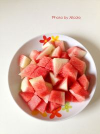

<style>

section[data-id="2"] {
    /*background-color: #40d47e;*/

}
section[data-id="2"] .box1 {
    left: 22px; top: 108px;
}
section[data-id="2"] .box2 {
    left: 256px; top: 82px;
}
section[data-id="2"] .box3 {
    left: 257px; top: 164px;
}
section[data-id="2"] .box3 p{
    width: 20px;
    position: absolute;
}
section[data-id="2"] .box3 .part1{
    /*left: 244px; top: 183px;*/
}
section[data-id="2"] .box3 .part2{
    left: 34px; top: 15px;
}
</style>

<!-- 第二屏 -->
<voice-pig id="voice-2" text="part2 将西瓜去皮,留些白瓤，有利尿作用、切大块" onplay="" onplaying="" onstop="window.goNext()"></voice-pig>
<section class="page page2">
    <div class="box1 animated fadeInDown hide">
        
    </div>
    <div class="box2 animated fadeInUp hide">
        <i>2</i>
    </div>
    <div class="box3 animated fadeInLeft hide">
        <p class="part1">将西瓜去皮<br>,留些</p>
        <p class="part2">白瓤<br>，有利尿作用<br>、切大块</p>
    </div>
    <div class="box4 animated"></div>
</section>
